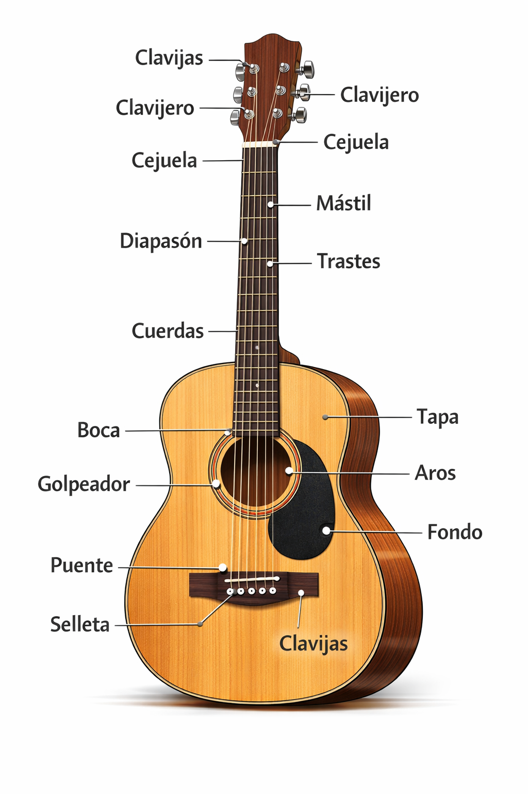

Conocer las partes de la guitarra es fundamental para aprender a tocar,
afinar correctamente y cuidar tu instrumento.

🎶 Partes principales de la guitarra
- Clavijas: Se encuentran en la cabeza y sirven para afinar las cuerdas.
- Cabeza: Parte superior donde se ubican las clavijas.
- Cejuela: Pieza que guía las cuerdas desde la cabeza hacia el mástil.
- Mástil: Parte larga de la guitarra donde se presionan las cuerdas.
- Diapasón: Superficie del mástil donde están los trastes.
- Trastes: Divisiones metálicas que determinan las notas.
- Cuerpo: Caja de resonancia que amplifica el sonido.
- Boca: Orificio por donde sale el sonido.
- Puente: Sujeta las cuerdas al cuerpo de la guitarra.
- Sillín: Pieza del puente que transmite la vibración de las cuerdas.
- Cuerdas: Producen el sonido al vibrar.
💡 Tip: Señala cada parte en tu propia guitarra mientras lees la lista para memorizar más rápido.
👉 Volver al inicio